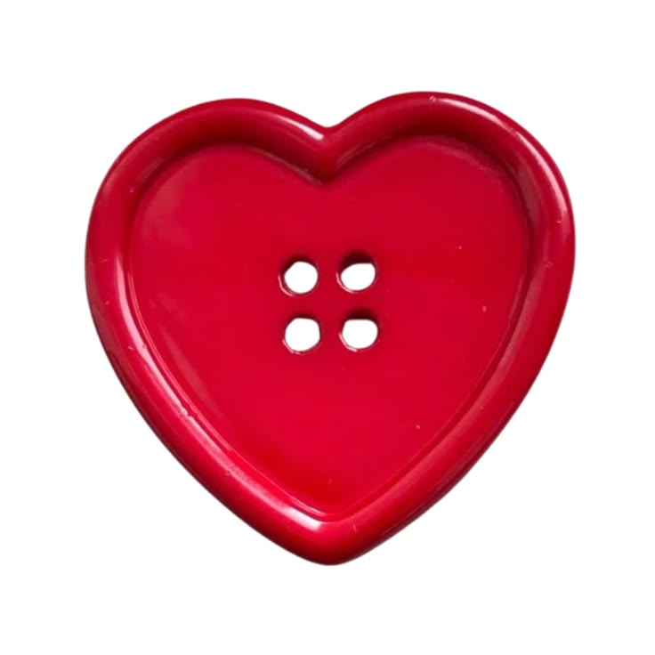

this is a heart icon!
the heart symbol is a cartoonish interpretation of the human heart, used to represent love. the shape is believed to have come from an extinct fennel plant that was often used by ancient greeks as a form of medicine